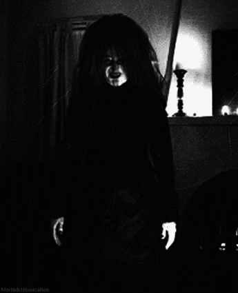
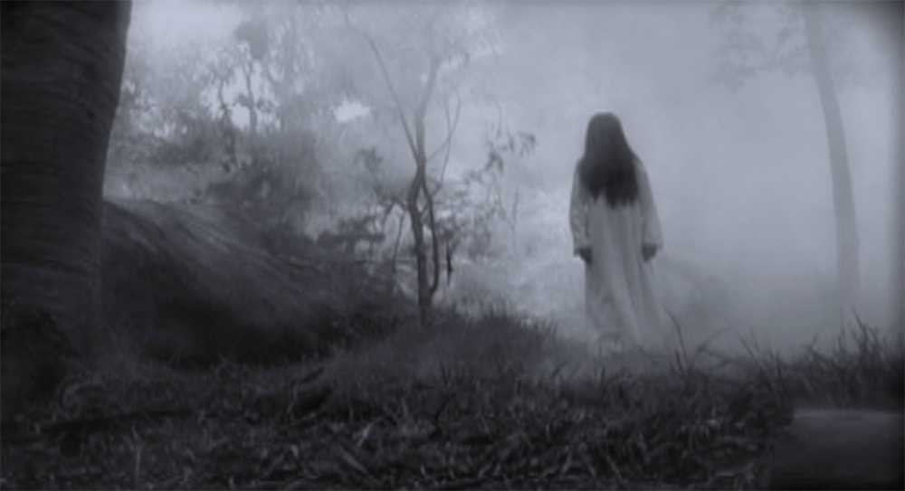
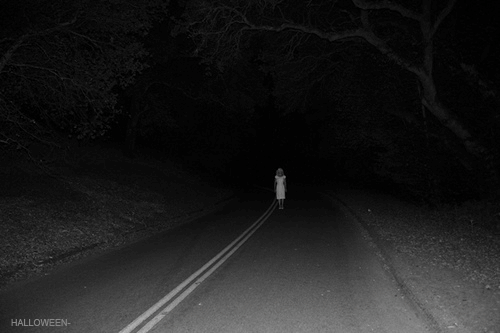

Comenzamos esta selección con una de las leyendas venezolanas más conocidas en la región de los Llanos: La Sayona. Con múltiples apariciones en los estados venezolanos.
Existen muchas versiones acerca del origen de este espectro, pero el más divulgado es el siguiente: La Sayona era una mujer muy celosa de nombre Casilda, ella mató a su amante y a su madre por creer que tenían un romance secreto. Su madre, en sus últimos minutos de vida, lanzó una maldición hacia su propia hija, convirtiéndola así en un alma en pena que vaga por los llanos venezolanos hasta el final de los tiempos.
Su nombre de Sayona se debe a que porta un sayal negro con el cual cubre su extraordinaria belleza, engatusa a los hombres infieles para llevarlos a una trampa mortal y de esta forma acaba con la vida de los mismos. Algunos dicen que sólo asusta de muerte a los hombres, mientras que otros afirman que se da un festín con sus víctimas comiéndolos vivos con sus dientes afilados como espadas y uñas tan largas como lanzas.
Quizás lo más atemorizante es que es el único espectro de la lista que tiene la particularidad de metamorfosis, esto significa que puede aparecerse a los hombres infieles en la forma de un perro, lobo, un ave o en la mujer hermosa anteriormente mencionada.
Escrito por Paul Rodriguez